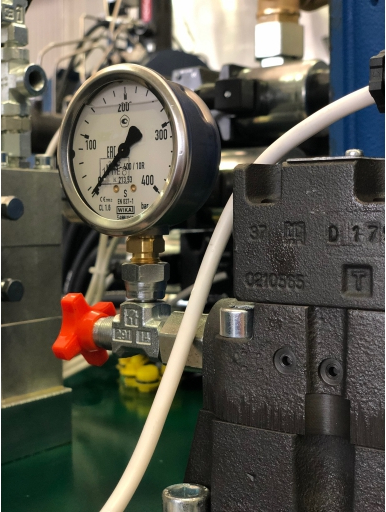
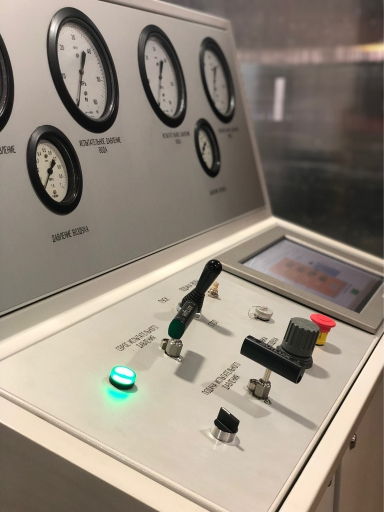

Сервис


Наша компания занимается не только поставками промышленного оборудования, но и предлагает
своим клиентам разнообразный сервис. Мы помогаем нашим клиентам
техническими консультациями
и обеспечиваем их всей информацией на любых стадиях выполнения заказа. После отгрузки и
проведения пуско-наладочных работ наши специалисты отслеживают работу оборудования. В этом
отношении Вы всегда можете сообщить нам о своих пожеланиях и замечаниях связанных с
эксплуатацией поставленного оборудования.
Для вас мы готовы решить задачи, связанные с ремонтом и испытаниями деталей или узлов
промышленного оборудования. Наличие мощного конструкторского отдела позволит нам это сделать
на высоком уровне. Мы заинтересованы в длительном сотрудничестве и партнерстве, поэтому вы
всегда можете обратиться к нам со своими техническими проблемами, и ни одно обращение не
останется без ответа.
-
На все поставленное оборудование мы предоставляем
гарантийное (18 месяцев) и постгарантийное обслуживание.
- Шеф-монтажные и пусконаладочные работы.
-
После поставки мы берем на себя комплектацию расходными материалами и расширенным
ЗИП.
-
Сопровождение заказа - одним персонально закрепленным менеджером. Это позволит вам
всегда знать, в какой стадии исполнения находится ваш заказ.
-
Для вас всегда работает наша служба технической поддержки в оперативном режиме.
-
Разработка технологической части проектов ремонтных участков и цехов с выдачей
строительного задания.
-
Для постоянных клиентов предлагаем различные формы оплаты - от частичной предоплаты
до поставки с рассрочкой платежа, в том числе и в лизинг.
-
Отгрузка готовой продукции производится в любую точку ближнего и дальнего зарубежья
в удобное для вас время автомобильным или железнодорожным транспортом.
-
На все поставляемое оборудование мы бесплатно предлагаем
технико-экономическое обоснование
его эффективности.
Мы можем обменять ваше устаревшее оборудование для ремонта трубопроводной арматуры на
аналогичное новое.